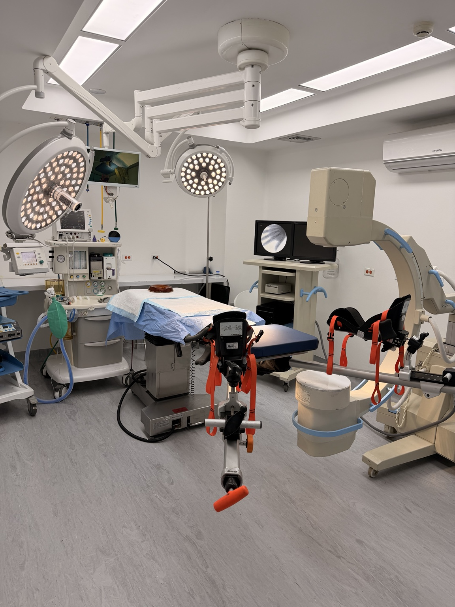

Four operating rooms
Spaces for elective procedures across surgical specialties.
LOS PALOS GRANDES · CARACAS
Operating rooms for surgeons across specialties, with a team to help coordinate each procedure.
More than a decadeserving surgeons and patients in Caracas.

BUILT FOR YOUR PRACTICE
Tell us about the procedure, the equipment you need and your preferred date. Our team will review availability and resources with you.
How to request an operating roomSpaces for elective procedures across surgical specialties.
Anesthesia, surgical technologist, circulating nursing and recovery staff, depending on each case's arrangements.
C-arm imaging, sterilization and other resources. Confirm specific availability when booking.
OUR CENTER
Want to visit the center or check a date for your procedure?
Check availability See more on Instagram @caqsacirugiaSPECIALTIES
If you need specific equipment or a particular setup, tell us about your procedure and we will review it with you.
Ask about my specialtyLET'S WORK TOGETHER
Tell us your specialty, procedure and preferred date.
We confirm room availability, equipment and coordination details.
We agree on the next steps for your surgery or a visit to the center.
VISIT US
4th Avenue of Los Palos Grandes, between 4th and 5th cross streets, Quinta San Antonio. Chacao Municipality, Caracas.
Office hours: Monday to Friday, 8:00 a.m. to 5:00 p.m.
Weekends: scheduled surgeries.
We can help you request an evaluation.